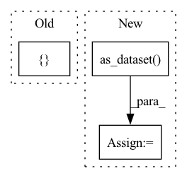

Pattern ID :22156

Before Change
data_dir=FLAGS.data_dir,
batch_size=per_core_batch_size,
use_bfloat16=FLAGS.use_bfloat16)
test_datasets = {
"clean":
strategy.experimental_distribute_datasets_from_function(
imagenet_eval.input_fn),
}
if FLAGS.adaptive_mixup:
imagenet_confidence_eval = utils.ImageNetInput(
is_training=True,
data_dir=FLAGS.data_dir,
After Change
one_hot=(FLAGS.mixup_alpha > 0),
use_bfloat16=FLAGS.use_bfloat16,
mixup_params=mixup_params)
train_dataset = builder.as_dataset(split=tfds.Split.TRAIN,
batch_size=batch_size)
train_dataset = strategy.experimental_distribute_dataset(train_dataset)
train_iterator = iter(train_dataset)
datasets_to_evaluate = {"clean": test_datasets["clean"]}
In pattern: SUPERPATTERN
Frequency: 3
Non-data size: 3
Instances
Fragment ID: 70178488
Project Name: google/uncertainty-baselines
Commit Name: 4464e6acec3dd6975bd3834f92e27654dbe4c0b6
Time: 2020-10-30
Author: trandustin@google.com
File Name: baselines/imagenet/batchensemble.py
M Class Name: AnonimousClass
N Class Name: AnonimousClass
M Method Name: main(1)
N Method Name: main(1)
M Parent Class:
N Parent Class:
M File Name: baselines/imagenet/batchensemble.py
N File Name: baselines/imagenet/batchensemble.py
M Start Line: 111
M End Line: 457
N Start Line: 112
N End Line: 446
'>
Before Change
one_hot=True)
train_dataset = strategy.experimental_distribute_datasets_from_function(
imagenet_train.input_fn)
test_datasets = {
"clean":
strategy.experimental_distribute_dataset(imagenet_eval.input_fn()),
}
train_iterator = iter(train_dataset)
test_iterator = iter(test_datasets["clean"])
if FLAGS.use_bfloat16:
After Change
image_size=input_image_size,
normalize_input=True,
one_hot=True)
train_dataset = builder.as_dataset(
split=tfds.Split.TRAIN,
batch_size=FLAGS.per_core_batch_size * FLAGS.num_cores)
clean_test_dataset = builder.as_dataset(split=tfds.Split.TEST,
batch_size=batch_size)
train_dataset = strategy.experimental_distribute_dataset(train_dataset)
test_datasets = {
'>
Fragment ID: 70178486
Project Name: google/uncertainty-baselines
Commit Name: 4464e6acec3dd6975bd3834f92e27654dbe4c0b6
Time: 2020-10-30
Author: trandustin@google.com
File Name: baselines/imagenet/efficientnet_be.py
M Class Name: AnonimousClass
N Class Name: AnonimousClass
M Method Name: main(1)
N Method Name: main(1)
M Parent Class:
N Parent Class:
M File Name: baselines/imagenet/efficientnet_be.py
N File Name: baselines/imagenet/efficientnet_be.py
M Start Line: 102
M End Line: 123
N Start Line: 103
N End Line: 116
'>
Before Change
use_bfloat16=FLAGS.use_bfloat16)
train_dataset = strategy.experimental_distribute_datasets_from_function(
imagenet_train.input_fn)
test_datasets = {
"clean":
strategy.experimental_distribute_datasets_from_function(
imagenet_eval.input_fn)
}
if FLAGS.adaptive_mixup:
imagenet_confidence_eval = utils.ImageNetInput(
is_training=True,
data_dir=FLAGS.data_dir,
After Change
one_hot=(FLAGS.mixup_alpha > 0),
use_bfloat16=FLAGS.use_bfloat16,
mixup_params=mixup_params)
train_dataset = builder.as_dataset(split=tfds.Split.TRAIN,
batch_size=batch_size)
train_dataset = strategy.experimental_distribute_dataset(train_dataset)
train_iterator = iter(train_dataset)
if (epoch + 1) % FLAGS.eval_interval == 0:
'>
Fragment ID: 70178485
Project Name: google/uncertainty-baselines
Commit Name: 4464e6acec3dd6975bd3834f92e27654dbe4c0b6
Time: 2020-10-30
Author: trandustin@google.com
File Name: baselines/imagenet/dropout.py
M Class Name: AnonimousClass
N Class Name: AnonimousClass
M Method Name: main(1)
N Method Name: main(1)
M Parent Class:
N Parent Class:
M File Name: baselines/imagenet/dropout.py
N File Name: baselines/imagenet/dropout.py
M Start Line: 113
M End Line: 381
N Start Line: 114
N End Line: 371